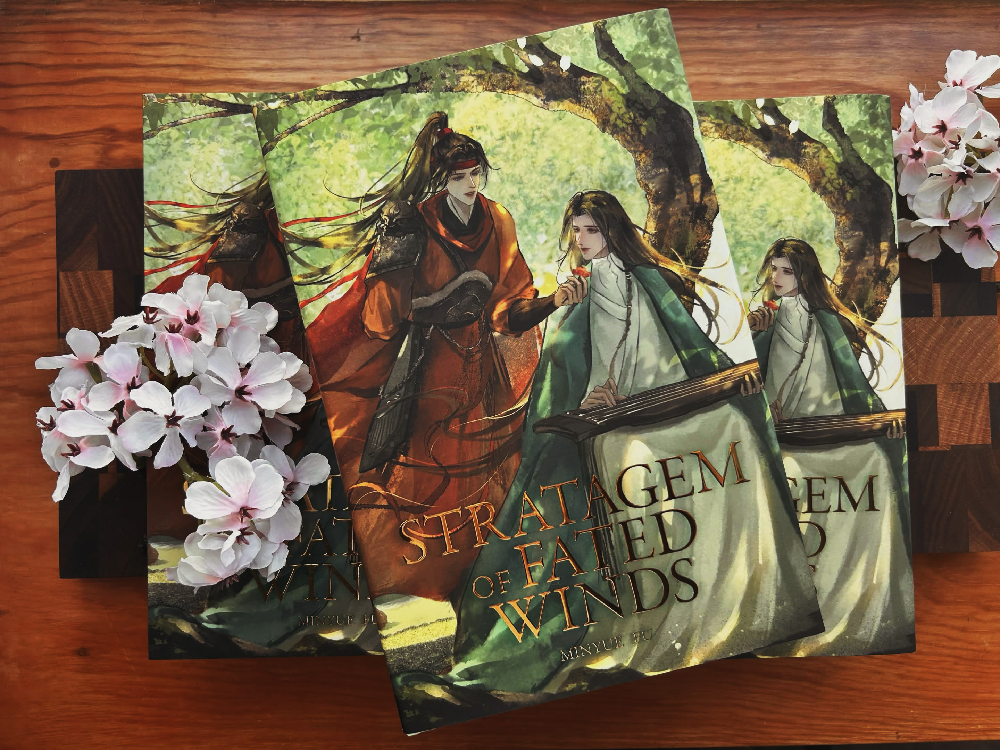
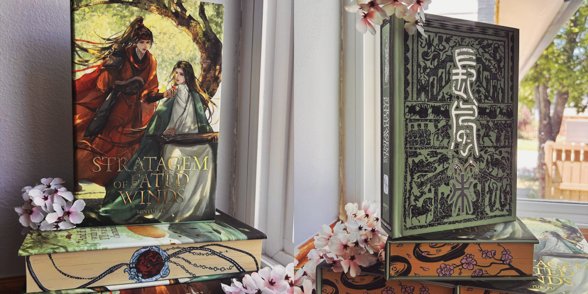
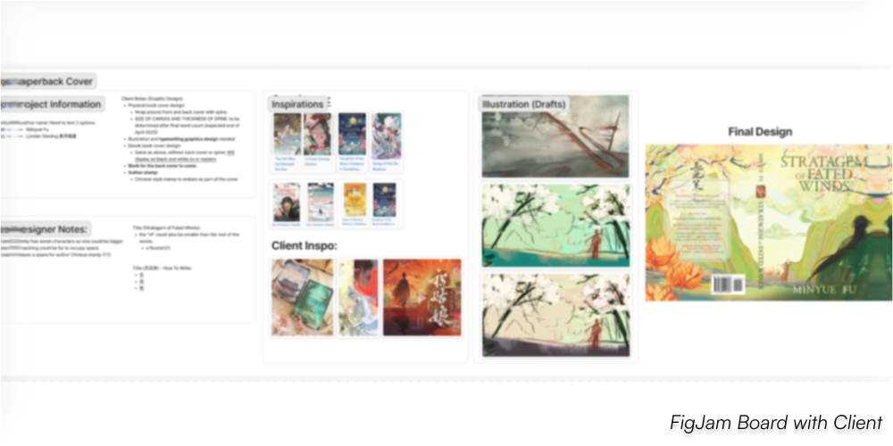
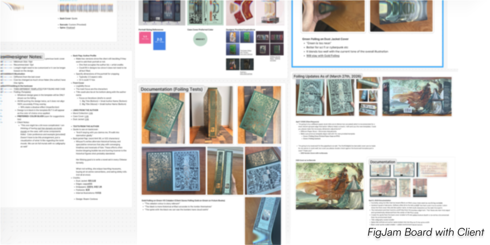
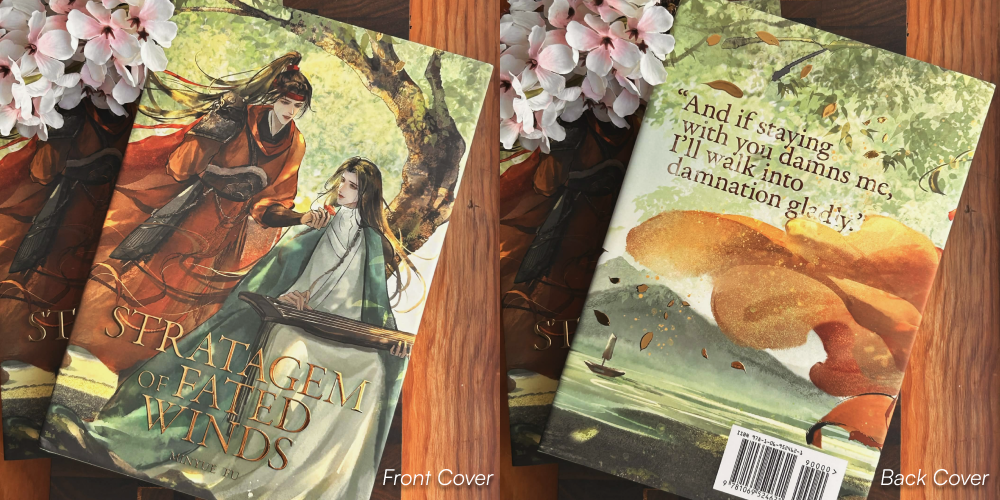
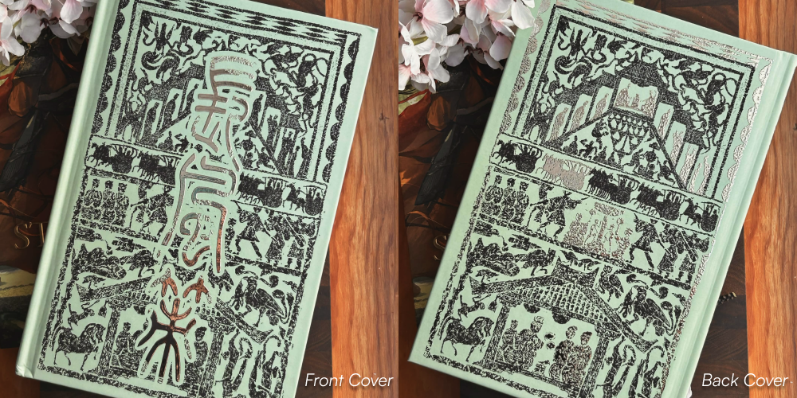
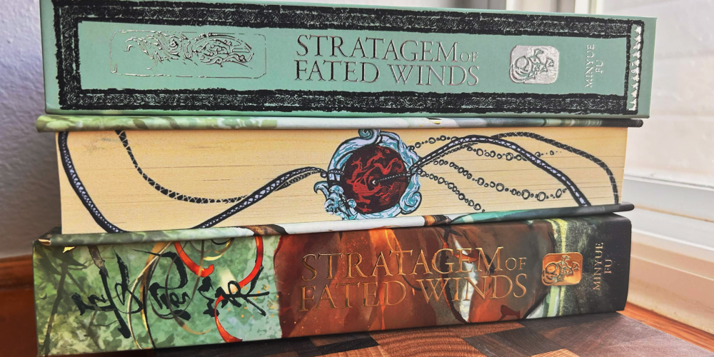
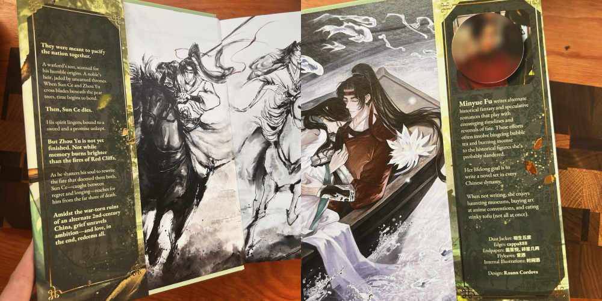

Stratagem of Fated Winds
"A Three Kingdoms M/M Fantasy Romance
(Chronicles of Ninefold Oblivion)"
Book Cover Designer
In this work, I was commissioned to design a book cover for Minyue Fu's Fantasy Romance called Stratagem of Fated Winds, both of her paperback and hard cover edition. I was able to design its book cover title and be responsible with the overall composition of the design, while also following set theme of colors. The process of its production allowed me to communicate directly to my client and follow the provided print specifications for production.
Working closely with my client in this work allowed me to showcase the collaboration aspect of design pipeline, while maintaining the relationship throughout the process. The overall process with iterations and revisions of the designs are seamless due to the structured deadlines that we established throughout the completion.
Visit Author's Website:
Minyue Fu
Software Used:
- Adobe Illustrator
- Adobe Photoshop
- Figma

Design Goals:
The primary challenge was designing a visual identity that complemented the commissioned illustration without competing for attention. Since the artwork was created by another artist, my role was to ensure that the typography, ornamental elements, and supporting graphics enhanced the illustration while preserving its narrative impact.
Beyond aesthetics, the cover also needed to function as a professional publication. In every design decision from the typography and decorative borders to color selection, it was carefully considered to maintain readability, establish a clear visual hierarchy, and meet the technical requirements for both paperback and hardcover print production.

Design Process:
Collaborative Planning
Rather than emailing revisions back and forth, I established a shared FigJam workspace where my client could follow the project's progress in real time. This centralized our research, design explorations, feedback, and production notes, making each iteration transparent and easy to discuss.
Research & Discovery
I analyzed contemporary historical fantasy novels to understand common approaches to typography, composition, and visual hierarchy. This helped identify genre conventions while ensuring the final design maintained its own identity.
Design Exploration
Multiple typography, border, and color treatments were explored to determine which combinations best complemented the commissioned illustration. Each iteration balanced visual harmony with readability, ensuring the supporting design elements enhanced rather than distracted from the artwork.
Refinement & Production
Throughout the project, I shared progress frequently rather than waiting for large milestone presentations. This iterative approach encourage ongoing discussion, reduced the need for major revisions, and ensured the design consistently aligned with the client's vision.
Using the specifications provided by the client's printing company alongside my proposed design, I developed a set of production guidelines that outlined the project's technical requirements and design constraints. By accounting for foil alignment tolerances, print limitations, typography sizing, and character limits for the book blurb and author biography, I ensured the design was both production-ready and easy for my client to communicate with the printer. This proactive approach streamlined the production process while minimizing potential printing issues before publication.


Final Outcome and Reflection:
This project strengthened my understanding of remote client collaboration and the importance of making communication a central part of the design process. While creating a visually polished outcome is important, I learned that effective design and balancing creative ownership is also about understanding the client's perspective, goals, and needs.
Through continuous feedback and iteration, I learned to approach design decisions collaboratively rather than relying solely on my own interpretation of what works best. This experience helped me grow as a designer by reinforcing the value of adaptability, communication, and creating solutions that are meaningful for both the client and the audience.




Artists and Credits:
- Author: Minyue Fu
- Dust Jacket: 相生五度
- Edges: cappa888
- Endpapers: 蓝星悦, 碎星几两
- Flyleaves: 棠洒
- Internal Illustrations: 时间酒
- Cover Design: Roann Cordova